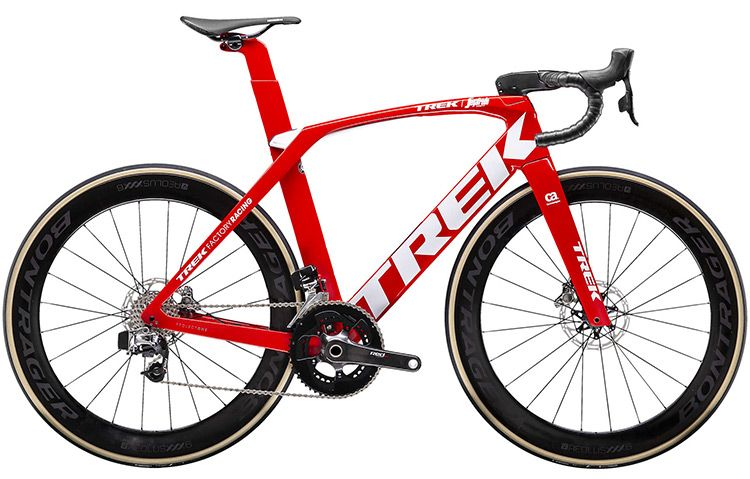

BICICLETA DE CARRETERA
Está diseñada y construida para la velocidad, por lo general adaptan una batalla corta, ángulos de asiento y frontales muy verticales, un eje pedalier alto y muy poca curvatura de la horquilla, este diseño permite al ciclista adoptar una posición aerodinámica y un modo más eficaz de transmitir la potencia a los pedales. Asimismo, el manillar varía de diseño según tipo de competición para que el ciclista adopte posiciones aerodinámicas. bicicleta de carreras está construida en aleación aluminio y triángulo posterior y horquilla de fibra de carbono, para aligerar la estructura del cuadro. Lleva neumáticos estrechos alto rendimiento (de 18 a 23 mm) y manillar para una postura baja.
-COMPONENTES-
Lleva todos los componentes igual que una bicicleta de montaña, pero cambia en algunas cosas.Por ejemplo, en el manillar, un manillar de una bicicleta de carretera su manillar tiene una forma extraña con los puños para abajo en forma de cuernos para conseguir una aerodinámica mayor. Este tipo de bicicleta no llevan suspension debido a que no se meten por superficies de tierra, etc...Los cambios delantero llevan 3 platos de menos a más, en la parte trasera, lleva 10 velocidades mas corta que una bicicleta de montaña.
